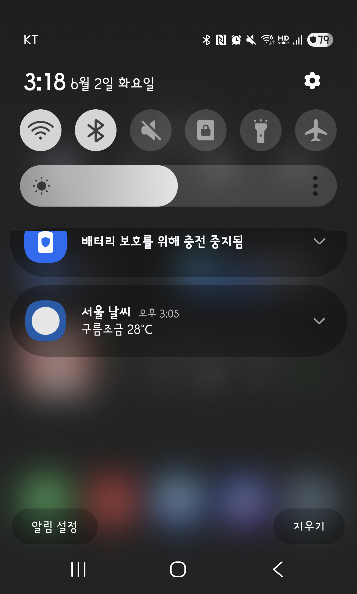
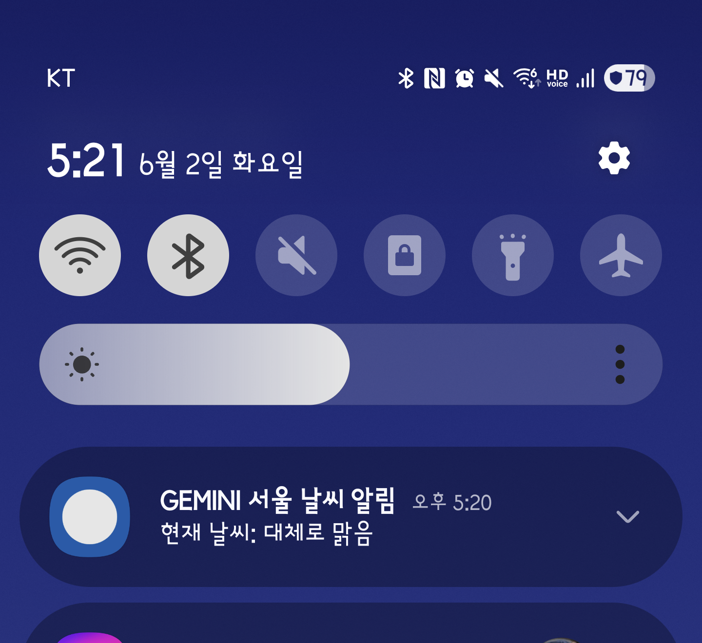

V7 Room DB에 저장된 즐겨찾기 도시에 대해 15분마다 날씨 알림을 보내는 WorkManager 시스템을 추가했습니다. 세 AI 모두 빌드·실기기 알림 발송에 성공했지만 Worker 구현 패턴과 권한 처리 방식에서 뚜렷한 차이가 나타났습니다.
| 항목 | Claude | Codex | Gemini |
|---|---|---|---|
| 클래스명 | WeatherWorker | WeatherNotificationWorker | WeatherWorker |
| 패키지 | worker/ | notifications/ (별도 모듈화) | root |
| suspend 패턴 | ✅ 정석 suspend | ✅ 정석 suspend | ⚠️ runBlocking 중첩 |
| 데이터 소스 | 실 API | 목 데이터 | 실 API |
| 권한 체크 위치 | MainActivity만 | MainActivity + Worker 내부 | MainActivity만 |
| 알림 스타일 | 기본 | BigTextStyle (풍부한 알림) | 기본 |
| 알림 아이콘 | 시스템 아이콘 재사용 | 커스텀 벡터 드로어블 생성 | 시스템 아이콘 재사용 |
| 스케줄러 분리 | Application 클래스 내부 | WeatherNotificationScheduler (별도 클래스) | Application 클래스 내부 |
| API 오류 시 | Result.retry() | Result.success() (skip) | Result.retry() |
CoroutineWorker.doWork()는 suspend fun으로 선언되어 코루틴 컨텍스트에서 실행됩니다. Gemini는 이를 non-suspend override fun doWork()로 선언하고 내부에서 runBlocking으로 감쌌습니다. 빌드는 통과하지만 Worker 스레드를 블로킹하는 구조로, 배터리 효율과 Doze 모드 동작에서 예기치 않은 결과를 낳을 수 있습니다.canPostNotifications()를 통해 발송 직전 다시 확인합니다. 권한이 사후에 취소되더라도 알림 발송 예외를 방지하는 가장 방어적인 접근입니다.FavoriteCityRepository 인터페이스로 분리했던 것처럼 V8에서도 WeatherNotificationScheduler를 별도 클래스로 분리했습니다. Worker 등록 로직이 Application 클래스에 섞이지 않아 테스트와 교체가 쉽습니다. 반면 Claude·Gemini는 Application 클래스에 직접 인라인했습니다.mockConditionForCity(cityIndex)로 하드코딩된 날씨 상태("맑음", "구름많음" 등)를 반환했습니다. 이유는 Worker의 책임 범위를 "알림 발송"으로 한정하고 네트워크 지연 실패를 Worker 재시도 루프와 분리하려는 설계 판단으로 보입니다. 알림 신뢰성(네트워크 없어도 항상 발송)을 API 정확성보다 우선했습니다. Claude·Gemini는 반대로 실 API를 Worker 안에서 직접 호출하여 실시간 날씨를 제공하되, 실패 시 Result.retry()로 대응했습니다.각 AI가 직접 ADB로 기기에 설치 → Room DB에 즐겨찾기 설정 → WorkManager 강제 트리거 → 알림 스크린샷 순서로 자가 검증했습니다.


ClassNotFoundException 발생. 원인: ① kotlin-android 플러그인 누락 ② doWork() non-suspend 선언 ③ AGP 9.2.1 등 실험적 버전 사용 ④ gradle.properties에 android.useAndroidX=true 누락. Gemini가 직접 모두 수정한 뒤 알림 발송 성공.assembleDebug는 컴파일 오류만 잡고 런타임 클래스 로딩 문제는 테스트 없이 통과합니다. 실기기 검증이 필수적인 이유입니다.Gemini의 초기 replace·run_shell_command 도구 호출 오류 4회가 약 40초의 추가 소요를 야기했습니다. 실제 구현 시간 기준으로는 Claude와 비슷한 수준입니다.